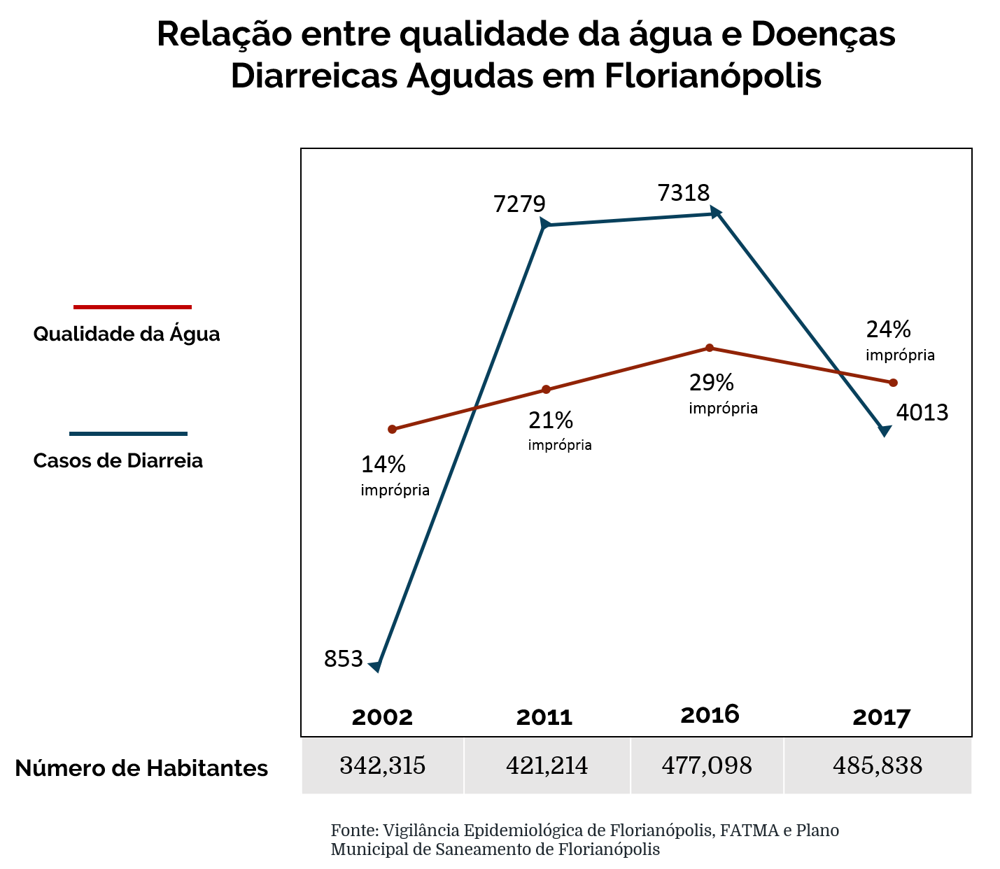

Casos de diarreia aumentam 470% no Norte da Ilha em 15 anos
A piora na qualidade da água do mar das praias do norte de Florianópolis foi acompanhada por um aumento expressivo na quantidade de pessoas que sofreram com fortes diarreias. Entre 2002 e 2017, o número de pacientes que procuraram a Unidade de Pronto Atendimento (UPA) Norte do município com os sintomas subiu de 853 para 4013, o que significa um aumento de 470%. A qualidade da água de Canasvieiras, principal balneário da região, piorou 10% no mesmo período, enquanto a população aumentou 38%.
De acordo com a Organização Mundial da Saúde (OMS), a cada dólar investido em saneamento, 4,3 dólares são economizados no mundo em saúde. No Brasil, o Ministério da Saúde estima que, em 2017, R$ 100 milhões foram gastos no SUS para tratar doenças relacionadas com a falta de saneamento básico.
A Secretaria de Saúde de Florianópolis nega a relação direta entre a poluição da água com os surtos de diarreias e vômitos na alta temporada. De acordo com a instituição, é impossível estipular uma causa para as doenças, uma vez que elas podem ter sido transmitidas por contaminação de alimentos e até mesmo pelo ar. “As populares ‘viroses’ podem ser disseminadas com o contato entre pessoas. Nunca houve um caso comprovado em que a impropriedade de uma praia causou surtos de forma direta”, defende Ana Cristina Vidor, gerente da Vigilância Epidemiológica de Florianópolis.
De acordo com estudo realizado pelas pesquisadoras Maria Angela Cabianca e Andyara Camargo no Programa de Mestrado em Hospitalidade da Universidade Anhembi Morumbi, sempre existe um aumento de casos de enfermidades em praias com problemas de balneabilidade, pois os banhistas ficam “expostos a bactérias, vírus e protozoários”. A doença mais comum associada ao contato com a água poluída por esgoto é a gastroenterite, que pode se manifestar com sintomas de enjoo, vômitos, dores de estômago, diarreia, dor de cabeça e febre.
A UPA Norte de Florianópolis registrou, na primeira semana de 2016, quase mil casos de pessoas com sintomas de gastroenterite. O pico das doenças foi no dia 8 de janeiro, em que foram registrados 192 casos. Na mesma semana, a Fundação do Meio Ambiente (FATMA), hoje Instituto do Meio Ambiente (IMA), reportou que 100% das amostras pesquisadas na praia de Canasvieiras, principal balneário da região norte da capital catarinense, estavam com contaminação fecal quase 20 vezes maior do que o permitido.
A Prefeitura de Florianópolis alegou, em nota, que 80% das pessoas doentes no início de 2016 não tiveram contato com a água do mar de Canasvieiras, o que negaria a relação direta. Mas, de acordo com o engenheiro sanitarista Daniel Lopes Gonçalves, os indícios de que a piora da qualidade da água influencia na saúde das pessoas não podem ser descartados pelo poder público.
Em estudo, Gonçalves comparou a incidência da degradação da água com o aparecimento de doenças diarreicas agudas (DDAs). Ele comprovou que, de 2002 a 2011, na região norte de Florianópolis, as ocorrências de DDAs foram cinco vezes maiores.
A reportagem relacionou, com base no estudo de Daniel Lopes Gonçalves, os dados mais recentes da FATMA e da Vigilância Epidemiológica sobre qualidade da água e saúde. Entre 2002 e 2017, o número de habitantes do município cresceu 38%, mas o aumento de doenças diarreicas foi de 470% na região norte. Se comparado com o ano anterior, o resultado é ainda mais alarmante: os casos entre 2002 e 2016, ano do surto de diarreias, fizeram com as doenças diarreicas tivessem um aumento de 857%.
Como é possível perceber no gráfico, em 2017 houve uma diminuição na quantidade de pessoas que apresentaram sintomas de gastroenterite em relação ao ano anterior. No final de 2016, a Casan teve que realizar intervenções em Canasvieiras devido a uma decisão judicial.
“Posso dizer que existem duas ações principais que levam a esse resultado, todas realizadas em 2016: a despoluição do rio de Canasvieiras e a fiscalização da CASAN e da Vigilância Sanitária para encontrar imóveis que lançavam esgoto irregular na região”, aponta Gonçalves. “Apesar das muitas variáveis que levam à certeza sobre a causa e consequência, o saneamento, a qualidade da água do mar e a saúde estão bem conectadas”, completa.
A gerente da Vigilância Epidemiológica de Florianópolis, Ana Cristina Vidor, defende que as doenças diarreicas são comuns nos verões e, por isso, existe a tendência de relacionar a balneabilidade das praias com o aumento dos sintomas. “A ineficiência do saneamento é um impulsionador de doenças. Conseguimos identificar casos em que um microorganismo específico está em uma praia e é o causador de enfermidades, como é o caso da cólera. Se um dia isso acontecer, podemos até interditar a praia. Mas, principalmente nos verões, pela falta de cuidado com os alimentos, é comum o aumento de doenças e não vamos interditar sem uma certeza”, diz.
A quantidade de pessoas que buscaram a UPA Norte no mês de janeiro também variou de acordo com os anos. Em 2002, foram registradas 62 ocorrências no primeiro mês do ano, quando em 2016 esse número subiu para 2860 casos. Após as intervenções na Estação de Tratamento de Canasvieiras e a fiscalização da Vigilância Sanitária, o primeiro mês de 2017 teve cerca de dois mil registros a menos. Em 2018, 1011 pessoas foram atendidas em janeiro com diarreias agudas.
De acordo com Marcos Oliveira, médico especialista em saúde da família, os quadros de diarreias agudas duram, no máximo, 7 dias. Em casos de disenteria geradas por contato com bactérias, as fezes são acompanhadas de sangue, vômitos e febre. As pessoas infectadas com vírus costumam a ter sintomas mais brandos e as diarreias duram, no máximo, cinco dias. Em casos onde as dores e fezes amolecidas permanecem por mais de uma semana, é fundamental procurar um médico para tratamento.
Saiba quais são os cuidados necessários em casos de diarreias agudas: